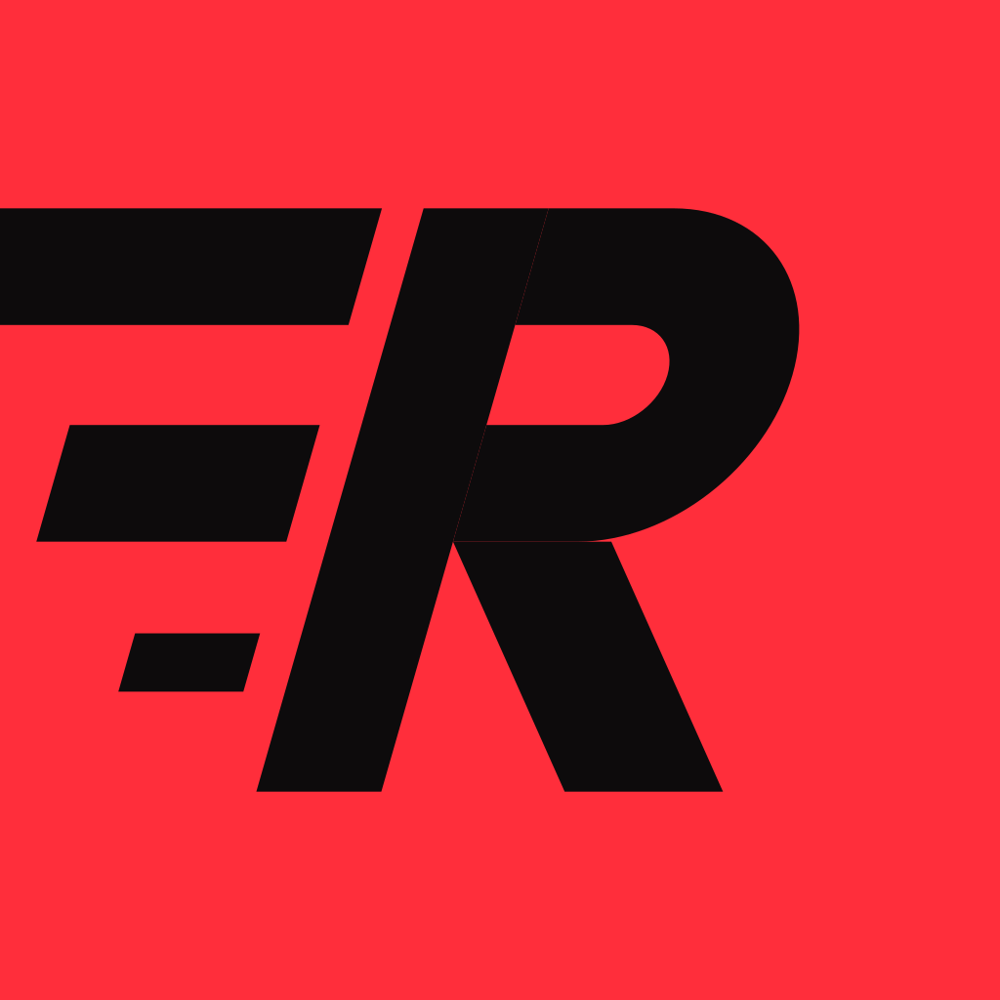

Panel
Conteneur de section : un titre en capitales, un indice discret à droite, puis le contenu.
Dernière séance
11/1030' EF bornée 6'00–6'20 · 5,02 km · 30'39 · FC moy. 157

Conteneur de section : un titre en capitales, un indice discret à droite, puis le contenu.
Le style commun des graphiques SVG : grille discrète, une série principale rouge, une série secondaire cyan, le point final mis en valeur et étiqueté.
Répartition du volume entre allure lente et allure soutenue, face à la cible de 80 % de facile.
Tuile d'indicateur : étiquette, grande valeur avec unité, ligne de contexte. Toujours dans une barre `rf-kpis` de 4 colonnes (2 sur téléphone).
Le journal des séances, la plus récente en haut, une ligne par séance avec son infobulle.
| Date | Séance | Distance | Durée | Allure | FC |
|---|---|---|---|---|---|
| 11/10 | FRACT540 m à fond | 0,54 km | 2'03 | 3'48 | 188 / 198 |
| 08/10 | SLSL 13,1 km | 13,10 km | 1h06'13 | 5'03 | – |
| 04/10 | RACECourse 5 km · Octobre Rose | 5,06 km | 25'37 | 5'04 | – |
| 26/09 | EF37' EF | 6,01 km | 36'35 | 6'05 | – |
Le détail d'une séance kilomètre par kilomètre : une barre de vitesse et trois colonnes de chiffres.
Une ligne du calendrier mensuel : sept jours puis le total de la semaine.
Compte à rebours de la prochaine course objectif, en haut à droite de l'en-tête.
Une séance dans le calendrier : son nom en notation d'entraîneur et, si elle est faite, distance et allure.
La semaine en cours en liste, dans la colonne latérale : un jour par ligne, sa séance et son type.
Alerte en pastille, en haut de page, sous l'en-tête : une étiquette d'état puis une phrase courte. Le détail est dans l'infobulle.
Petite pastille d'état en capitales, toujours avec son mot.
Une entrée du Lexique : l'abréviation en grand, sa définition dessous.
L'explication au survol, au focus ou au toucher, présente sur chaque séance, indicateur, alerte et marque de graphique.
Répétitions rapides séparées de récupérations. Une séance de qualité par semaine au maximum.